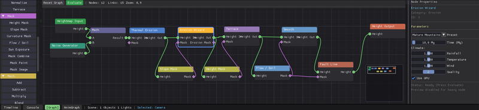

← Back to Home
Terrain Node Reference
Reference guide for all procedural generation nodes available in the Terrain Node Graph.
Input Nodes
Perlin Noise
Generates classic coherent noise. Good for mountains and rolling hills.
| Param | Desc |
|---|---|
| Scale | Frequency of the noise. Lower = larger features. |
| Persistence | Roughness of the fractals. |
| Octaves | Detail layers. |
Worley Noise (Voronoi)
Cellular noise. Excellent for rocks, cracked earth, and alien landscapes.
| Param | Desc |
|---|---|
| Jitter | Randomness of cell centers. |
| Type | Distance metric (F1, F2, F2-F1). |
Image Input
Loads an external heightmap (PNG/TIFF/EXR).
Math & Modification
Math (Mix)
Combines two heightmaps (Info A and Input B).
- Add: A + B
- Subtract: A - B
- Multiply: A * B (Masking)
- Max/Min: Keeps highest/lowest points.
Curve
Remaps height values using a visual curve editor. Use this to create terraces, plateaus, or steep cliffs.

Please save a screenshot of a Curve Node as
manual/images/node_curve.png
Simulation
Erosion Node
Runs the hydraulic erosion simulation on the input heightmap and outputs the eroded result + water map + sediment map.
Warning: Erosion is computationally expensive. It runs on the CPU.
Output
Terrain Output
The final node. Connect your result here to apply it to the 3D terrain mesh.